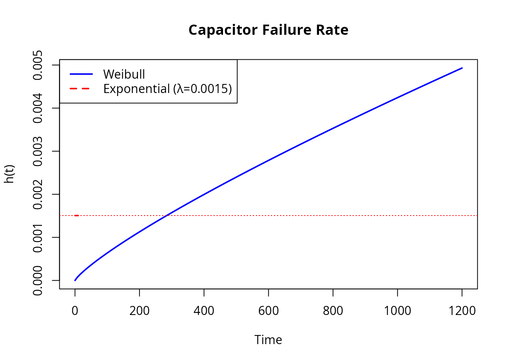
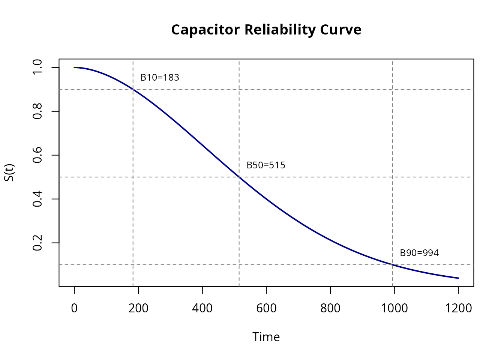
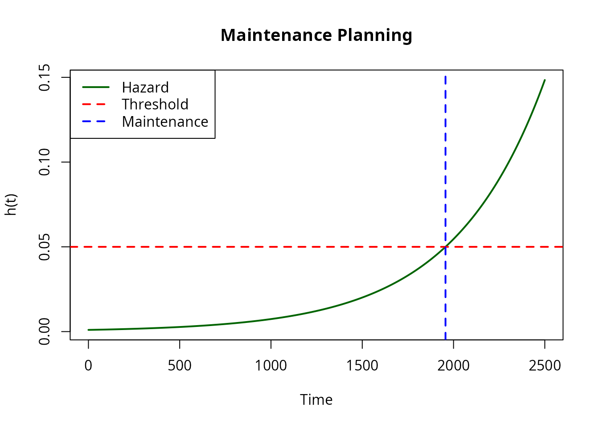
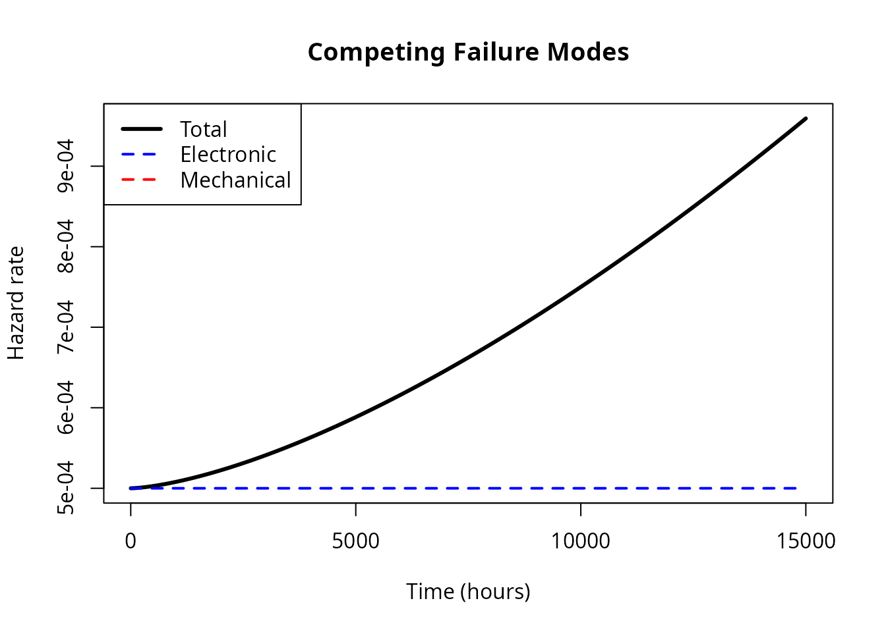
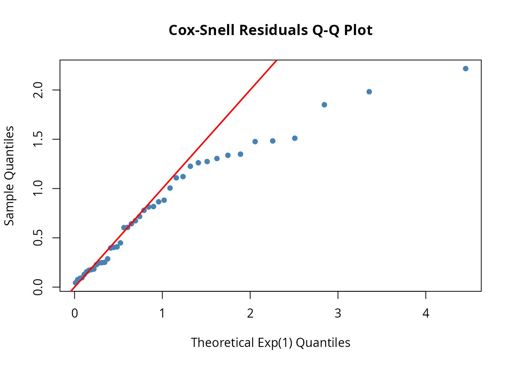

Reliability Engineering Applications
Source:vignettes/reliability_engineering.Rmd
reliability_engineering.RmdIntroduction
Reliability engineers think in failure rates — not densities, not CDFs. The question is always: given that a unit has survived this long, how likely is it to fail in the next instant? That makes hazard-based modeling a natural fit for reliability work.
This vignette walks through five case studies that show how
flexhaz handles real reliability engineering problems:
- Capacitor lifetime analysis — Fit competing models to censored test data
- B-life calculations — Compute B10, B50, B90 warranty metrics
- Warranty analysis — Predict field failure rates from accelerated testing
- Maintenance scheduling — Find optimal intervals for aging systems
- Competing failure modes — Decompose additive hazards from multiple mechanisms
Case Study 1: Capacitor Lifetime Analysis
A manufacturer tests 50 ceramic capacitors to characterize their failure behavior. The test runs for 1000 hours, after which surviving units are treated as censored.
The Data
# Simulated capacitor failure data (hours)
set.seed(42)
n_tested <- 50
max_test_time <- 1000
# Generate from Weibull (unknown to analyst)
true_shape <- 2.3
true_scale <- 800
raw_times <- rweibull(n_tested, shape = true_shape, scale = true_scale)
# Apply censoring at test end
capacitor_data <- data.frame(
hours = pmin(raw_times, max_test_time),
failed = as.integer(raw_times <= max_test_time)
)
# Summary
cat("Failures:", sum(capacitor_data$failed), "\n")
#> Failures: 43
cat("Censored:", sum(1 - capacitor_data$failed), "\n")
#> Censored: 7
head(capacitor_data)
#> hours failed
#> 1 279.5083 1
#> 2 243.7478 1
#> 3 881.8960 1
#> 4 384.8345 1
#> 5 561.8139 1
#> 6 665.8662 1Model Comparison
Compare exponential (constant failure rate) vs Weibull (allows increasing/decreasing):
# Prepare data in flexhaz format
df <- data.frame(t = capacitor_data$hours, delta = capacitor_data$failed)
# Fit exponential
exp_solver <- fit(dfr_exponential())
exp_result <- exp_solver(df, par = c(0.001))
exp_lambda <- coef(exp_result)
cat("Exponential lambda:", round(exp_lambda, 6), "\n")
#> Exponential lambda: 0.001506
# Fit Weibull
weib_solver <- fit(dfr_weibull())
weib_result <- weib_solver(df, par = c(2, 600))
weib_params <- coef(weib_result)
cat("Weibull shape:", round(weib_params[1], 3), "\n")
#> Weibull shape: 1.823
cat("Weibull scale:", round(weib_params[2], 1), "\n")
#> Weibull scale: 629.3Model Selection
Use AIC to compare models (lower is better):
# Compute log-likelihood at fitted parameters
ll_exp <- loglik(dfr_exponential())
ll_weib <- loglik(dfr_weibull())
aic_exp <- -2 * ll_exp(df, exp_lambda) + 2 * 1 # 1 parameter
aic_weib <- -2 * ll_weib(df, weib_params) + 2 * 2 # 2 parameters
cat("AIC (Exponential):", round(aic_exp, 2), "\n")
#> AIC (Exponential): 646.84
cat("AIC (Weibull):", round(aic_weib, 2), "\n")
#> AIC (Weibull): 630.41
cat("Winner:", ifelse(aic_weib < aic_exp, "Weibull", "Exponential"), "\n")
#> Winner: WeibullInterpretation
# Create fitted distributions
exp_fit <- dfr_exponential(lambda = exp_lambda)
weib_fit <- dfr_weibull(shape = weib_params[1], scale = weib_params[2])
# Compare hazard functions
plot(weib_fit, what = "hazard", xlim = c(0, 1200),
col = "blue", lwd = 2, main = "Capacitor Failure Rate")
plot(exp_fit, what = "hazard", add = TRUE, col = "red", lwd = 2)
legend("topleft", c("Weibull", "Exponential"), col = c("blue", "red"), lwd = 2)
The Weibull shape > 1 indicates wear-out behavior - failure rate increases with age.
Case Study 2: B-Life Calculations
In reliability engineering, B-life metrics indicate when a certain percentage of the population will have failed.
- B10: Time by which 10% have failed (90% survival)
- B50: Median lifetime (50% survival)
# Use fitted Weibull distribution
Q <- inv_cdf(weib_fit)
# Calculate B-lives
B10 <- Q(0.10) # 10% failure quantile
B50 <- Q(0.50) # Median
B90 <- Q(0.90) # 90% failure quantile
cat("B10 life:", round(B10, 1), "hours\n")
#> B10 life: 183.2 hours
cat("B50 life:", round(B50, 1), "hours\n")
#> B50 life: 514.7 hours
cat("B90 life:", round(B90, 1), "hours\n")
#> B90 life: 994.3 hoursVisual Representation
plot(weib_fit, what = "survival", xlim = c(0, 1200),
main = "Capacitor Reliability Curve",
col = "darkblue", lwd = 2)
# Add B-life reference lines
abline(h = c(0.90, 0.50, 0.10), lty = 2, col = "gray50")
abline(v = c(B10, B50, B90), lty = 2, col = "gray50")
# Labels
text(B10, 0.95, paste0("B10=", round(B10)), pos = 4, cex = 0.8)
text(B50, 0.55, paste0("B50=", round(B50)), pos = 4, cex = 0.8)
text(B90, 0.15, paste0("B90=", round(B90)), pos = 4, cex = 0.8)
Case Study 3: Warranty Analysis
A product has a 2-year warranty. Using the fitted model, we can predict:
- What fraction will fail during warranty?
- Expected warranty claims per 1000 units?
# Warranty period (convert years to hours: 2 years ≈ 17520 hours)
warranty_hours <- 2 * 365 * 24
# But our capacitor test was at accelerated conditions
# Assume acceleration factor of 20x
field_warranty_equivalent <- warranty_hours / 20
# Fraction failing during warranty
S <- surv(weib_fit)
survival_at_warranty <- S(field_warranty_equivalent)
failure_rate <- 1 - survival_at_warranty
cat("Warranty period (equivalent hours):", round(field_warranty_equivalent, 1), "\n")
#> Warranty period (equivalent hours): 876
cat("Expected survival at warranty end:", round(survival_at_warranty * 100, 1), "%\n")
#> Expected survival at warranty end: 16.1 %
cat("Expected failure rate:", round(failure_rate * 100, 2), "%\n")
#> Expected failure rate: 83.92 %
cat("Claims per 1000 units:", round(failure_rate * 1000, 1), "\n")
#> Claims per 1000 units: 839.2Case Study 4: Maintenance Scheduling
For an aging system (Gompertz model), determine optimal preventive maintenance intervals.
# System with aging characteristics
system <- dfr_gompertz(a = 0.001, b = 0.002)
# Target: keep hazard below 0.05 (5% per time unit)
h <- hazard(system)
# Find time when hazard reaches threshold
# h(t) = a * exp(b*t) = 0.05
# t = log(0.05/a) / b
threshold <- 0.05
a <- 0.001
b <- 0.002
maintenance_time <- log(threshold / a) / b
cat("Hazard threshold:", threshold, "\n")
#> Hazard threshold: 0.05
cat("Maintenance interval:", round(maintenance_time, 1), "time units\n")
#> Maintenance interval: 1956 time units
# Visualize
plot(system, what = "hazard", xlim = c(0, 2500),
main = "Maintenance Planning", col = "darkgreen", lwd = 2)
abline(h = threshold, col = "red", lty = 2, lwd = 2)
abline(v = maintenance_time, col = "blue", lty = 2, lwd = 2)
legend("topleft", c("Hazard", "Threshold", "Maintenance"),
col = c("darkgreen", "red", "blue"), lty = c(1, 2, 2), lwd = 2)
After maintenance (replacement), the hazard resets to its initial value.
Case Study 5: Competing Failure Modes
Real products often have multiple failure modes. Model with additive hazards:
# Electronic component: constant failure rate (random defects)
# Mechanical component: Weibull wear-out
dfr_competing <- function(lambda_elec = NULL, k_mech = NULL, sigma_mech = NULL) {
par <- if (!is.null(lambda_elec) && !is.null(k_mech) && !is.null(sigma_mech)) {
c(lambda_elec, k_mech, sigma_mech)
} else NULL
dfr_dist(
rate = function(t, par, ...) {
lambda <- par[[1]]
k <- par[[2]]
sigma <- par[[3]]
# Combined hazard = electronic + mechanical
lambda + (k / sigma) * (t / sigma)^(k - 1)
},
par = par
)
}
# Product with both failure modes
product <- dfr_competing(lambda_elec = 0.0005, k_mech = 2.5, sigma_mech = 10000)
# Decompose contributions
t_seq <- seq(1, 15000, length.out = 200)
h_total <- sapply(t_seq, function(ti) hazard(product)(ti))
h_elec <- rep(0.0005, length(t_seq))
h_mech <- (2.5 / 10000) * (t_seq / 10000)^(2.5 - 1)
# Plot decomposition
plot(t_seq, h_total, type = "l", col = "black", lwd = 3,
xlab = "Time (hours)", ylab = "Hazard rate",
main = "Competing Failure Modes")
lines(t_seq, h_elec, col = "blue", lwd = 2, lty = 2)
lines(t_seq, h_mech, col = "red", lwd = 2, lty = 2)
legend("topleft", c("Total", "Electronic", "Mechanical"),
col = c("black", "blue", "red"), lwd = c(3, 2, 2), lty = c(1, 2, 2))
Model Diagnostics
Always validate your model with residual analysis:
# Check Weibull fit for capacitor data
qqplot_residuals(weib_fit, df)
Points following the diagonal indicate good fit. Systematic departures suggest model misspecification.
Summary
Key reliability metrics you can compute with
flexhaz:
| Metric | Function | Purpose |
|---|---|---|
| Reliability R(t) | surv() |
Probability of survival to time t |
| Hazard h(t) | hazard() |
Instantaneous failure rate |
| MTTF | inv_cdf()(0.632) |
Mean time to failure (for Weibull ≈ scale) |
| B-life | inv_cdf() |
Time for given failure fraction |
| Failure rate | 1 - surv()(t) |
Cumulative failure proportion |
Best Practices
- Always check censoring: Right-censored data is common in reliability testing
- Compare models: Use AIC/BIC to select between distributions
- Validate with residuals: Cox-Snell Q-Q plots reveal misfit
-
Consider physics: Choose distributions that match
failure mechanisms
- Wear-out → Weibull (shape > 1)
- Random → Exponential
- Aging → Gompertz
- Account for acceleration: Lab tests often use accelerated conditions